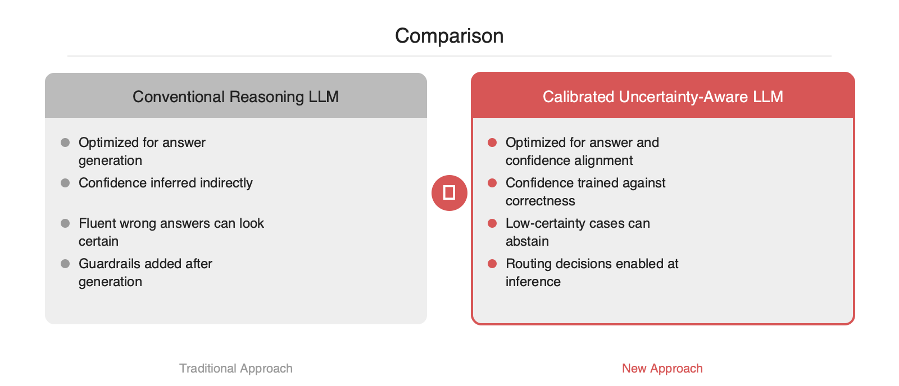

LLM 운영에서 까다로운 문제 중 하나는 모델이 틀린 답을 하면서도 확신에 찬 어조를 유지한다는 점입니다. MIT가 소개한 새 학습 방법은 이 지점을 직접 겨냥합니다. 목표는 정답률을 끌어올리는 것이 아니라, 모델의 자신감이 실제 정답 가능성과 맞물리도록 재학습하는 일입니다. 이 접근이 중요한 이유는 단순 품질 개선을 넘어, 저신뢰 응답을 검색·도구 호출·휴먼 리뷰로 안전하게 라우팅할 수 있게 만들기 때문입니다. 에이전트, RAG, 고위험 업무 자동화가 늘어나는 현재 시점에 실무적 의미가 큰 연구로 보입니다.
MIT News가 소개한 이번 연구의 초점은 모델 성능 자체보다 신뢰도 추정의 정확성에 있습니다. 문제는 많은 LLM이 답을 생성하는 능력과, 그 답이 맞을 가능성을 스스로 판단하는 능력이 분리되어 있지 않다는 점입니다. 그 결과 모델은 모를 때도 그럴듯한 문장으로 답을 이어가고, 운영 환경에서는 이것이 환각, 과신, 잘못된 자동화로 이어집니다.
이번 접근의 메시지는 단순합니다. 모델이 정답을 맞히는 것만 학습시키지 말고, 확신 수준도 실제 정답률에 맞게 학습시키자는 것입니다. 즉, "아는 경우 자신 있게 답하고, 애매한 경우 불확실성을 표명하는" 행동을 목표 함수에 포함하는 방식입니다.
기존 LLM 파이프라인은 대체로 다음 목표에 최적화됩니다.
하지만 이 목표들은 캘리브레이션과 동일하지 않습니다. 토큰 확률이 높다고 해서 최종 답변이 사실이라는 뜻은 아닙니다. 특히 추론형 모델에서는 중간 단계의 문장 생성이 길어질수록, 문장 유창성과 정답 가능성이 더 쉽게 분리됩니다.
실무에서 자주 쓰는 후처리 기법도 한계가 있습니다.
결국 운영 리스크의 근본 원인은 모델의 답변 품질만이 아니라, 모델이 자기 확실성을 잘못 표현하는 구조에 있습니다.
기사 설명을 기준으로 보면, MIT의 방법은 모델이 출력한 답의 정확도와 자신감 추정치를 더 잘 정렬하도록 학습시키는 방향입니다. 핵심은 다음 두 요소로 요약할 수 있습니다.
1. 정답 여부를 반영한 신뢰도 학습입니다.
모델은 단지 답을 생성하는 것이 아니라, 해당 답이 맞을 가능성도 함께 표현하도록 학습됩니다.
2. 성능 저하 없이 캘리브레이션 개선입니다.
기존에는 불확실성을 더 자주 말하게 만들면 답변 회피가 늘어 정답률이 떨어질 수 있었습니다. 이번 연구는 이 균형점을 개선하는 데 초점을 둔 것으로 보입니다.
개념적으로는 아래와 같은 학습 목표를 떠올리면 이해가 쉽습니다.
Total Loss = Answer Loss + λ * Calibration Loss
Answer Loss는 기존의 정답 생성 목적입니다.Calibration Loss는 모델의 confidence가 실제 정답률과 어긋나지 않도록 벌점을 주는 항목입니다.λ는 정확도와 캘리브레이션 사이의 균형을 맞추는 계수입니다.즉, 모델이 틀릴 가능성이 높은 상황에서 높은 확신을 내면 더 큰 비용을 치르게 만드는 구조입니다. 이 방식은 "확신 있는 오답"을 줄이는 데 직접 작동합니다.
기존 시스템은 보통 질문 -> 생성 -> 후처리 순서입니다. 반면 이번 접근은 학습 단계에서부터 불확실성 신호를 내재화한다는 점이 다릅니다.
이 차이는 에이전트 시스템에서 의미가 큽니다. 후처리형 가드레일은 잘못된 답이 이미 생성된 뒤 차단하는 방식이지만, 캘리브레이션된 모델은 애초에 저신뢰 상황을 스스로 드러낼 수 있기 때문입니다.
이 연구가 실무에서 중요한 이유는 confidence를 제어 신호로 사용할 수 있게 된다는 점입니다. 예를 들면 다음과 같습니다.
간단한 운영 패턴은 아래와 같습니다.
def answer_with_guardrail(query):
answer, confidence = model.generate(query, return_confidence=True)
if confidence < 0.35:
docs = retriever.search(query)
answer, confidence = model.generate(
query,
context=docs,
return_confidence=True,
)
if confidence < 0.20:
return {
"status": "needs_review",
"answer": None,
"confidence": confidence,
}
return {
"status": "ok",
"answer": answer,
"confidence": confidence,
}
이 패턴의 장점은 명확합니다.

다만 캘리브레이션이 만능은 아닙니다.
따라서 실무에서는 정답률만이 아니라 다음 지표를 함께 봐야 합니다.
최근 LLM은 단순 채팅을 넘어 검색, 코드 실행, 업무 자동화의 제어 계층으로 들어가고 있습니다. 이 단계에서는 "잘 답하는 모델"보다 "언제 틀릴 수 있는지 드러내는 모델"이 운영적으로 더 유용합니다. MIT의 이번 접근은 환각을 사후 검열하는 대신, 과신의 원인을 학습 단계에서 다루는 방향이라는 점에서 의미가 있습니다.
엔지니어 관점에서 보면 핵심 질문은 하나입니다. 정답 생성 모델을 쓸 것인가, 아니면 정답 가능성까지 함께 보고하는 모델을 쓸 것인가입니다. 프로덕션에서는 후자가 점점 기본값이 될 가능성이 높아 보입니다.